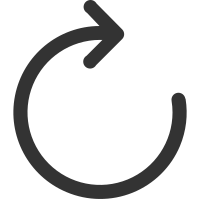

CSS Display Tool 
show
{{ index + 1 }}: {{ travel.selectorName }}
div
div > p1
div > p2
ul
div > ul > li1
div > ul > li1 > p1
div > ul > li1 > p2
div > ul > li2
div > ul > li3
div > ul > li4
div > p3
div > p4
p1
p2